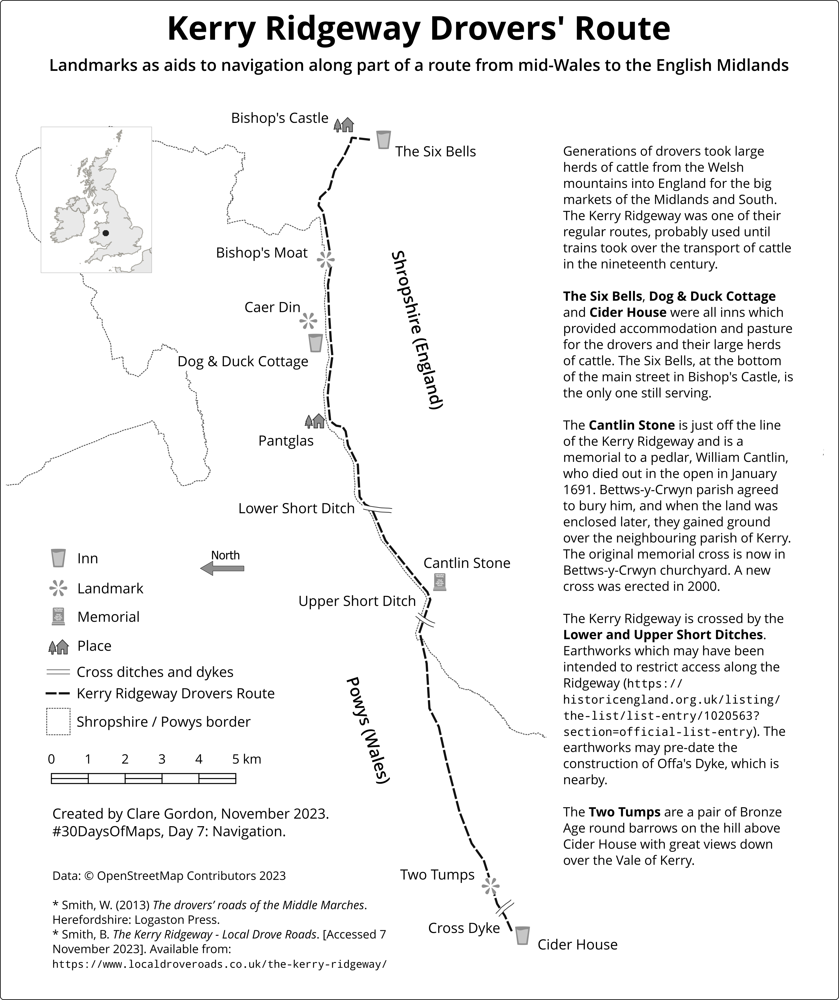

Navigation
Kerry Ridgeway Drovers’ Route

Data
This is a map I’ve been thinking about making for a long time and it’s good to get on and do it.
Based on information in
Smith, W. 2013. The drovers’ roads of the Middle Marches. Little Logaston, Woonton Almeley, Herefordshire: Logaston Press.
and The Kerry Ridgeway on the Local Drove Roads website.
Process
- Added data.
- Used Smith, W. to digitise points for landmarks such as Cider House and Two Tumps.
- Created layout and rotated map frame to allow route to fill height of portrait page.
- Added basic layout elements, e.g. scale, and key, but didn’t add labels - easier to place in Inkscape?
- Exported map layout to pdf and then opened that in Inkscape.
- Added labels, text about the landmarks, title etc in Inkscape.
What have I learnt from this?
- How long it can take to put a layout together! But also, how some things are easier or more controllable in Inkscape then QGIS. Useful, as I’ll be teaching my students a session on this soon.
- Started with coloured symbols etc, but quickly realised that in this case greyscale was going to be much more effective.
What would I like to change?
- Probably just spending more time on the layout. Exploring fonts etc.
- Are there any more landmarks I could add? Any more information I could put in the description? Though there is probably more than enough text already!